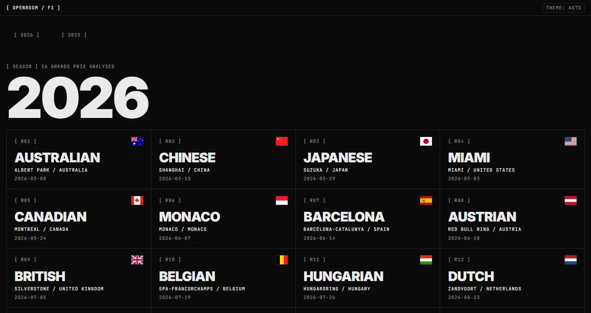
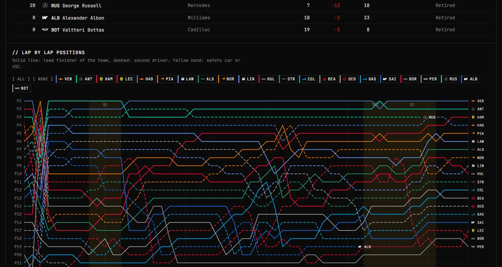
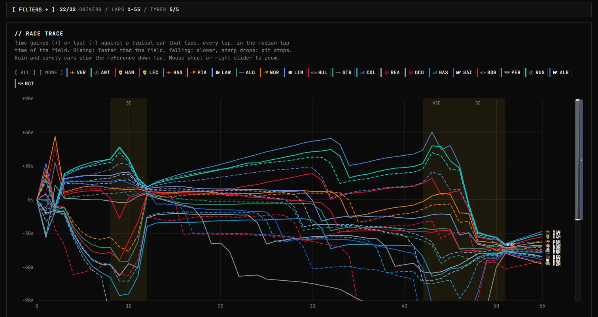
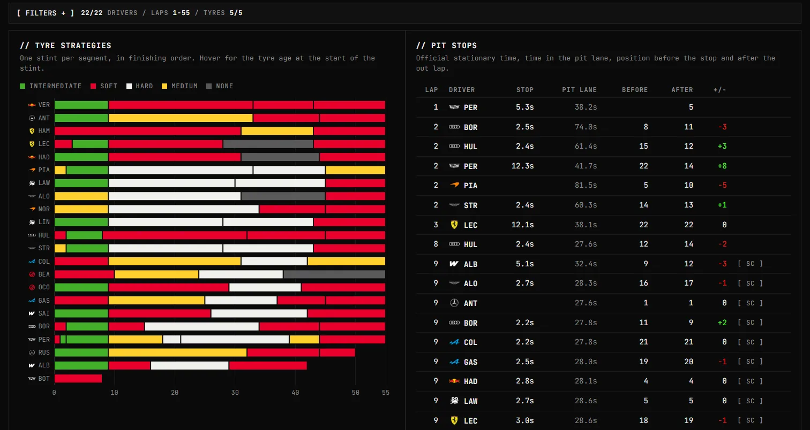
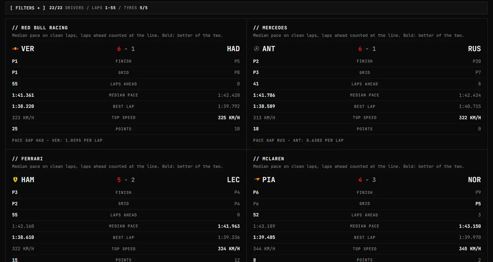
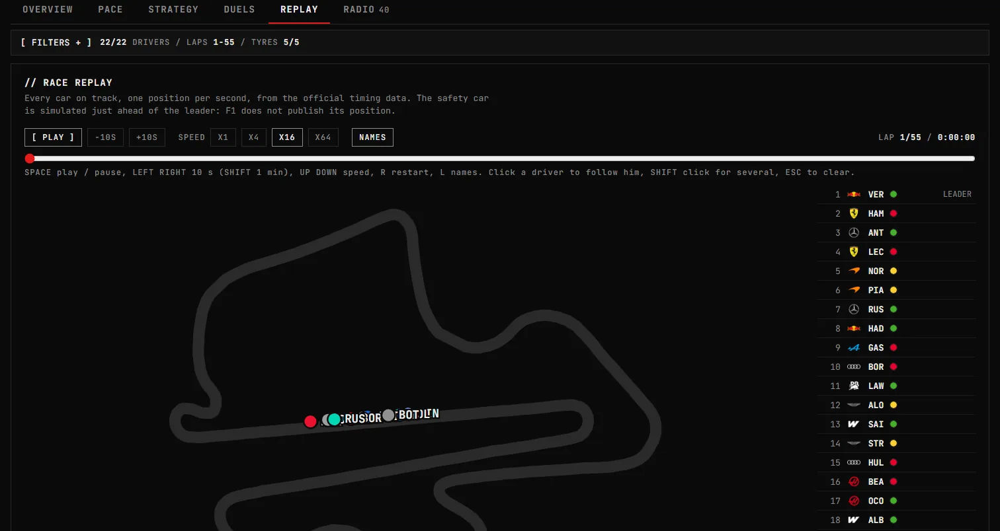

03openroomf1
L'analyse d'après-course de la Formule 1, façon salle des opérations : rythme, stratégie, duels entre coéquipiers et replay de chaque Grand Prix. Post-race Formula 1 analysis, styled as an operation room: pace, strategy, teammate duels and a replay of every Grand Prix.
- Type
- App web, en ligneWeb app, live
- Stack
- Python, pandas, FastF1, SvelteKit, ECharts, Docker
- DonnéesData
- 40 Grands Prix, saisons 2025 et 202640 Grands Prix, 2025 and 2026 seasons
- StatutStatus
- Maintenu, mis à jour après chaque courseMaintained, updated after every race
- LienLink
- openroomf1.anderson3x11.dev

L'idéeThe idea
Après une course, les chiffres qui expliquent vraiment le résultat sont éparpillés : temps au tour, relais, arrêts, écarts. openroomf1 les rassemble sur une page par Grand Prix, lisible comme un tableau de bord d'ingénieur.
After a race, the numbers that actually explain the result are scattered: lap times, stints, stops, gaps. openroomf1 brings them together on one page per Grand Prix, read like an engineer's dashboard.
Des filtres globaux (pilotes, équipes, plage de tours, pneus) s'appliquent à tous les onglets, et chaque graphique se lit en clair comme en sombre.
Global filters (drivers, teams, lap range, tyres) apply to every tab, and every chart works in light and dark mode.


Rythme et stratégiePace and strategy
La race trace compare chaque pilote à une voiture de référence qui boucle chaque tour au temps médian du peloton : la pluie et les voitures de sécurité ne faussent plus la lecture. On y trouve aussi l'écart à n'importe quel pilote, une heatmap des temps au tour, le tour idéal et les vitesses de pointe.
The race trace compares every driver to a reference car that laps at the field's median time: rain and safety cars no longer skew the picture. It also shows the gap to any driver, a lap time heatmap, the ideal lap and top speeds.
Côté stratégie : les relais pneus, les arrêts avec le temps d'immobilisation officiel et les positions avant et après, et la dégradation de chaque relais corrigée de l'effet du carburant.
On the strategy side: tyre stints, pit stops with the official stationary time and positions before and after, and the degradation of each stint corrected for fuel load.


Duels et replayDuels and replay
Chaque paire de coéquipiers est comparée : arrivée, grille, tours passés devant, rythme médian, meilleur tour, vitesse. Le replay rejoue toute la course sur le tracé, une position par seconde, avec l'ordre de course, les pneus, les écarts et des raccourcis clavier.
Every pair of teammates is compared: finish, grid, laps ahead, median pace, best lap, speed. The replay plays the whole race back on the track map, one position per second, with the running order, tyres, gaps and keyboard shortcuts.


Choix techniquesTechnical choices
Tout est pré-calculé. Un pipeline Python (FastF1, pandas) récupère les données après la course, calcule les statistiques et écrit des fichiers JSON compacts, environ 1 Mo par Grand Prix. SvelteKit en fait un site entièrement statique : pas de base de données, et le navigateur n'appelle jamais les sources de données.
Everything is computed ahead of time. A Python pipeline (FastF1, pandas) fetches the data after the race, computes the statistics and writes compact JSON files, about 1 MB per Grand Prix. SvelteKit turns them into a fully static site: no database, and the browser never calls the data sources.
Un déploiement contraint par la source. L'archive live timing de la F1 refuse les IP de datacenters, VPS comme runners GitHub Actions. Le pipeline tourne donc chez moi : un script traite la course et pousse les données, et Coolify reconstruit l'image Docker (build statique servi par Caddy) à chaque push.
Deployment shaped by the source. The F1 live timing archive refuses datacenter IPs, VPS and GitHub Actions runners alike. So the pipeline runs at home: one script processes the race and pushes the data, and Coolify rebuilds the Docker image (a static build served by Caddy) on every push.
Des données propres. Les neutralisations sont lues tour par tour pour chaque pilote, pour ne pas écarter à tort les tours des voitures attardées. Les dépassements officiels sont dédoublonnés et débarrassés de leurs artefacts. Le championnat est rattaché aux noms d'équipes FastF1, qui diffèrent de ceux de Jolpica.
Clean data. Neutralisations are read lap by lap for each driver, so lapped cars don't lose valid laps. Official overtakes are deduplicated and stripped of artifacts. The championship is matched to FastF1's team names, which differ from Jolpica's.
# deploy/publish.sh, after each race
uv run python -m pipeline run --season "$SEASON" --latest
git add data && git commit -m "Data: $SEASON, latest race" -- data
git push # Coolify rebuilds the siteLimitesLimits
C'est de l'analyse après course, pas du direct : le site est mis à jour le soir du Grand Prix. La F1 ne publie que les radios diffusées à l'antenne, et pas la position de la voiture de sécurité : le replay la place devant le leader pendant les neutralisations.
It's post-race analysis, not live: the site is updated on the evening of the Grand Prix. F1 only publishes the radios that were broadcast, and not the safety car's position: the replay places it ahead of the leader during neutralisations.